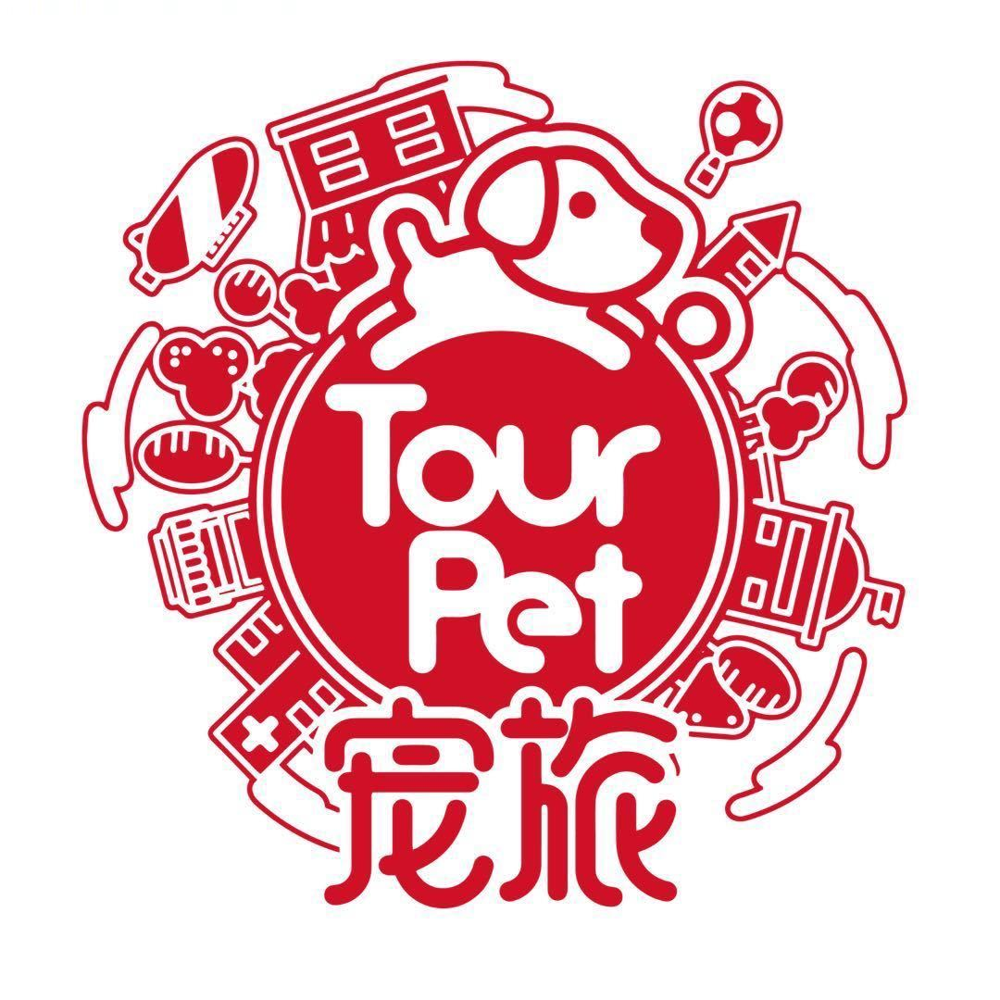
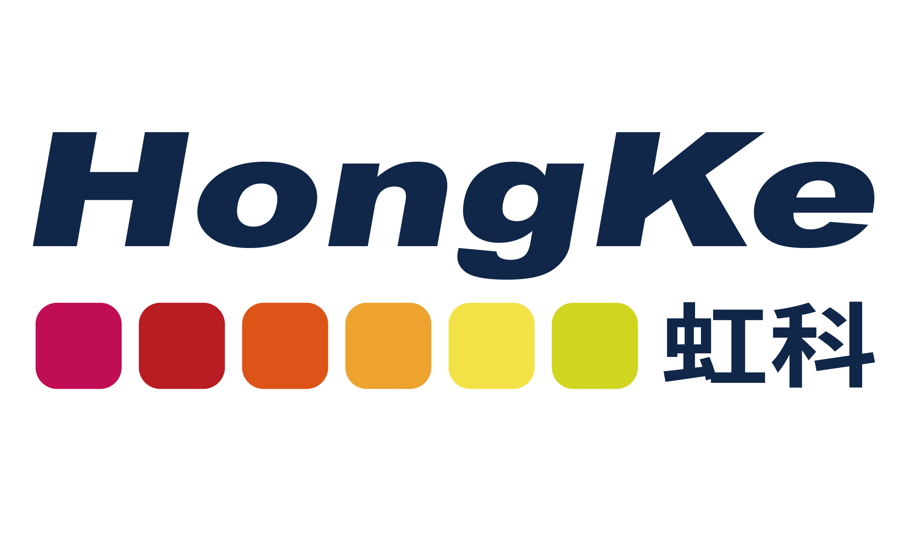

数据驱动
商业化产品策划/运营在上海 ESC 教育公司负责搭建运营工作流，通过输入—理解优化—输出为 skill 形成全链路，将日均收入提升 20%。擅长结合各类 AI 工具整合全链路。
JD MATCHER
支持粘贴 JD 文本，也可以上传 TXT 或 PDF。所有分析在浏览器本地完成，用你的简历证据匹配岗位能力要求。
生成报告后，这里会给出适合在面试或作品集中强化的表达。
ABOUT ME
在上海 ESC 教育公司负责搭建运营工作流，通过输入—理解优化—输出为 skill 形成全链路，将日均收入提升 20%。擅长结合各类 AI 工具整合全链路。
从 0-1 搭建宠物分享垂直账号，全平台累计涨粉 1500+，总浏览量 20w+，互动量 5k+，并实现挂车盈利 1w+。擅长内容矩阵搭建形成内容—盈利闭环。
独立完成私域营销—获客—转化—盈利全链路闭环，私域客户超过 1w+，拍摄宠物家庭超过 1000+，盈利超过 30w。
热衷于利用 AI 提升效率，搭建雅思文章精读工作流，并正在搭建小红书/飞书智能回复助手等多个自动工作流，追求效率与 AI 深度结合。
EDUCATION & INTERNSHIP
市场营销 · 广州 · 2023.9 - 2027.6
商业化增长策略精细化用户体验数据分析
宠物自媒体内容矩阵策划私域转化兴趣电商运营
自动化工作流智能回复开发AI工具应用效率系统搭建

门店运营增长实习生
2023.11 - 2024.05
负责宠物摄影门店小红书内容运营与私域转化，设计“内容种草-私信咨询-社群承接-预约到店”链路；累计发布 56 篇笔记，单篇最高点击 25w，带动销售 272 单、GMV 45.2w。
市场部
2024.7 - 2025.12
负责美国文书业务板块内容矩阵与获客增长，沉淀爆款标题、首图、故事线与评论区问题模板；产出小红书笔记 125 篇，最高浏览 12w，公众号累计曝光 100w+。

内容运营
2025.9 - 2025.11
负责京东、1688、淘宝等平台新品上架及 SPU 更新，梳理 9 个事业部产品卖点，完成 2000+ 次上下架与 170+ 张视觉物料模版；通过 PCAN 接口线 A/B 测流推动销量环比增长 28.8%。
PROJECTS
宠物博主 · 内容增长 & 兴趣电商 & 私域运营
从 0-1 搭建宠物分享垂直账号，全平台累计涨粉 1500+，总浏览量 20w+，互动量 5k+，并实现挂车盈利 1w+。擅长内容矩阵搭建，形成内容—盈利闭环。
📕 前往我的小红书主页 →自由摄影师
独立完成私域营销—获客—转化—盈利全链路闭环，私域客户超过 1w+，拍摄宠物家庭超过 1000+，盈利超过 30w。
Vibe Coding 实践者
热衷于利用 AI 提升效率，搭建雅思文章精读工作流，并正在搭建小红书 / 飞书智能回复助手等多个自动工作流，追求效率与 AI 深度结合。
LET'S CONNECT
扫描二维码添加微信，欢迎交流合作
扫一扫上面的二维码图案，加我为朋友。